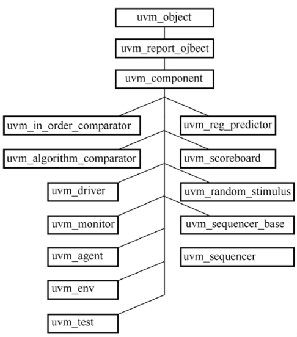
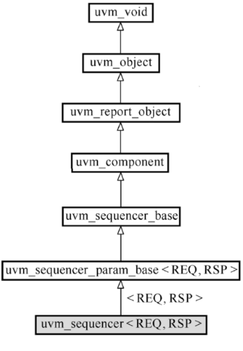
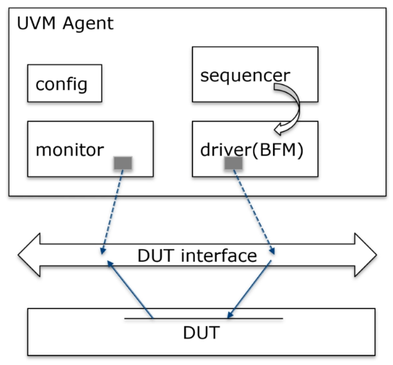
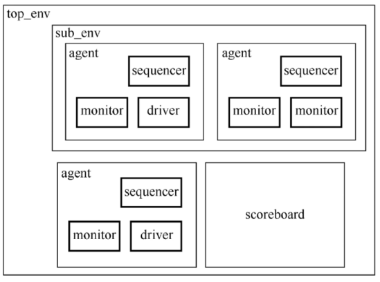
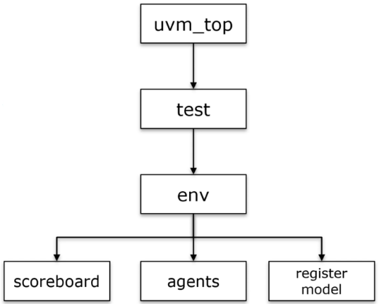
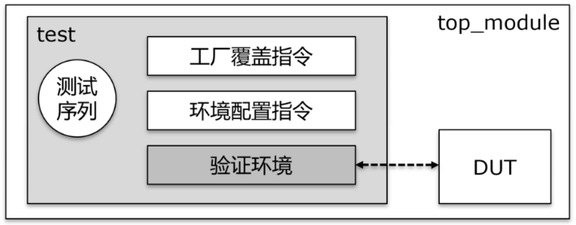
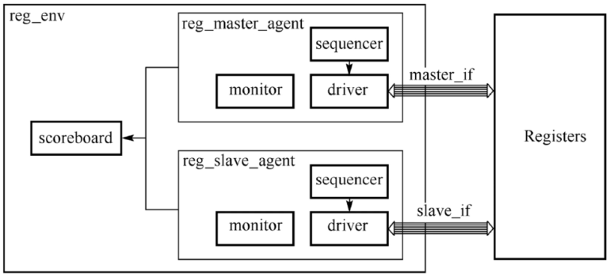
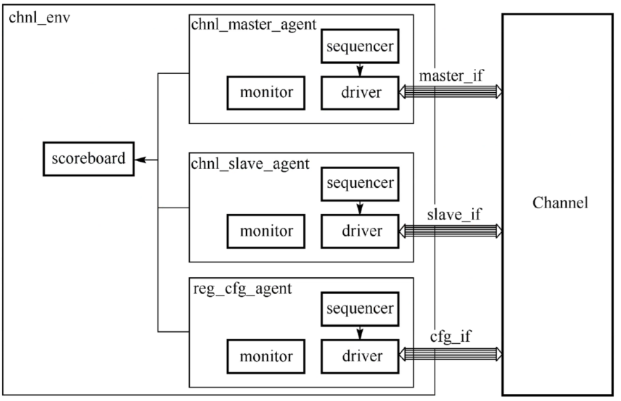
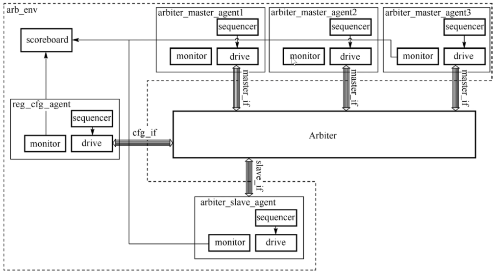

UVM入门3
组件家族

- 从uvm_component类继承的类都继承了phase机制，均可以构成验证环境
- 常见验证组件
- uvm_driver
- uvm_monitor
- uvm_sequencer
- uvm_agent
- uvm_scoreboard
- uvm_env
- uvm_test
uvm_driver
概述
class uvm_driver #(type REQ=uvm_sequence_item, type RSP=REQ)- 从该类会从uvm_sequencer中获取事务（transaction），经过转化进而在接口中对DUT进行时序激励
- 该类是参数化的类，在定义时需要声明参数的类型
- 在定义新的driver类时，应声明该类所需要获取的事务参数REQ类型，默认情况下RSP参数类型同REQ类型保持一致
- uvm_driver在uvm_component基础上没有扩展新的函数，只是扩展了一些用来通信的端口和变量
uvm_seq_item_pull_port #(REQ, RSP) seq_item_port;uvm_analysis_port #(RSP) rsp_port;REQ req;RSP rsp;
- driver类与sequencer类之间的通信就是为了获取新的事务对象，这一操作通过pull方式实现
driver.seq_item_port.connect(sequencer.seq_item_export);driver.rsp_port.connect(sequencer.rsp_export);
class dut_driver extends uvm_driver #(basic_transaction); // REQ is basic_transaction (sequenct item类型)
virtual chip_if vif;
bit [7:0] addr, data;
`uvm_component_utild (dut_driver)
function new(name, parent);
super.new(name, parent);
endfunction
extern task run_phase(uvm_phase phase);
endclass
uvm_monitor
概述
- 监测接口数据
- uvm_monitor与父类相比，没有增添新的成员和方法，新定义的类继承于uvm_monitor有助于实现父类的方法和特性
- 常用功能
- 观测DUT的interface，收集总线数据
- 永远保持POSSIVE模式，永远不会驱动DUT
- 在观察总线协议或者内部信号协议时，可以做一些功能和时序的检查
- 对于更复杂的检测要求，可以将数据发送至其他验证组件例如scoreboard，reference model或者coverage collector
class serial_monitor extends uvm_monitor;
virtual serial_if.monitor mi;
`uvm_component_utils(serial_monitor)
function new(string name, uvm_component parent);
super.new(name, parent)
endfunction
function void build_phase(uvm_phase phase);
super.build_phase(phase)
endfunction
extern task run_phase(uvm_phase);
endclass
task serial_monitor::run_phase(uvm_phase);
serial_transaction tr;
tr = new();
forever begin
wait(mi.rts);
@(negedge mi.line);
#(bit_period/2);
for (int i=0; i<=7; i++) begin
#(bit_period);
tr.parity_error ^= mi.line;
tr.data[i] = mi.line;
end
#(bit_period) assert(mi.line == 1'b1) else
`uvm_warning("MON", "Framing error")
...
end
endtask
uvm_sequencer

概述
- uvm_sequencer如同一个管道，传递sequence产生的连续的激励事务，最终通过TLM端口送至driver一侧
- uvm_sequencer也可以从uvm_driver那里获取随后的RSP对象来得知数据通信是否正常
- uvm_sequencer也是一个参数类，需要在定义sequencer时声明REQ的类型
- sequencer既管理者sequence，同时也将sequence中产生的transaction item传送到driver一侧
class my_sequencer extends uvm_sequencer #(basic_transaction);
`uvm_component_utils(uvm_sequencer)
function new(string name, uvm_component parent);
super.new(name, parent);
endfunction
endclass
uvm_agent
- agent是一个标准的验证单位，包含driver，monitor，sequencer
- 为了复用，uvm_agent中只需要包含一个monitor，而不需要driver和sequencer，这就需要一个变量进行有条件的例化
uvm_active_passive_enum is_active = UVM_ACTIVE
- is_active是agent的一个成员，缺省值为UVM_ACTIVE，表示处在active模式的agent需要例化driver, monitor, sequencer；而如果is_active的值是UVM_PASSIVE，表示agent在passive模式可以只例化monitor。active模式的agent既有激励功能也有监测功能，passive模式的agent只具有监测功能
- active模式对应着DUT的接口暴露给agent且需要激励的场景，passive模式对应着DUT的接口已经与其他设计连接而只需要监测的场景
- 通过is_active变量，agent需要在build_phase()和connect_phase()等函数中通过选择语句来对driver和sequencer进行有条件的例化和连接
- 按照总线传输的方向划分可以分为master和slave，master agent是用来向DUT发起transaction，slave agent是用来响应DUT的events

class my_agent extends uvm_agent;
my_sequencer m_sqr;
my_driver m_drv;
my_monitor m_mon;
dut_if vif;
uvm_active_passive_enum is_active = UVM_ACTIVE;
...
extern function void build_phase(uvm_phase phase);
extern function void connect_phase(uvm_phase phase);
`uvm_component_utils(my_agent)
endclass
function void template_master_agent::build();
super.build();
monitor = template_master_monitor::type_id::create("monitor", this);
if (is_active == UVM_ACTIVE) begin
sequencer = template_master_sequencer::type_id::create("sequencer", this);
driver = template_master_driver::type_id(create"driver", this);
end
endfunction
function void template_master_agent::connect();
if (is_active == UVM_ACTIVE) begin
driver.seq_item_port.connect(sequencer.seq_item_export);
end
endfunction
uvm_scoreboard
- uvm_scoreboard与checker有同样的功能，进行数据比对和报告
- 实际环境中，uvm_scoreboard会接受来自多个monitor的监测数据，继而进行对比和报告
- 在scoreboard中通常会声明TLM端口以供monitor传输数据
- 简单比较的方法可以采用UVM预定义的comparator，复杂的设计可以在scoreboard中分别创建reference model和comparator
- 如果一个组件中有子一级的组件，应该考虑它们的创建，连接和通信问题
class cpu_scoreboard extends uvm_scoreboard;
uvm_analysis_export #(bus_xact) in_export;
uvm_analysis_export #(bus_xact) out_export;
typedef uvm_in_order_comparator #(bus_xact) comp_t;
comp_t m_comp;
function void build_phase(uvm_phase phase);
super.build_phase(phase);
in_export = new("in_export", this);
out_export = new("out_export", this);
m_comp = comp_t::type_id::create("m_comp", this);
endfunction
function void connect_phase(uvm_phase phase);
super.connect_phase(phase);
in_export.connect(m_comp.before_export);
out_export.connect(m_comp.after_export);
endfunction
endclass
uvm_env

- uvm_env可能包含多个uvm_agent和其他的component
- uvm_env就是一个结构化的容器，同时也可以作为子环境在更高层的集成中被嵌入
- uvm_env和uvm_agent之间的嵌套关系如下
- uvm_agent作为一个标准单元，在更上层的集成中应该被例化到uvm_env
- uvm_env在更高层的复用中，可以被其他的uvm_env所嵌套
class top_env extends uvm_env;
sub_env m_se;
my_agent m_agt;
my_scoreboard m_sb;
`uvm_component_utils(top_env)
extern function new(string name, uvm_component parent);
function void build_phase(uvm_phase);
m_se = sub_env::type_id::create("m_se", this);
m_agt = my_agent::type_id::create("m_agt", this);
m_sb = my_scoreboard::type_id::create("m_sb", this);
endfunction
...
endclass
uvm_test
- uvm_test是验证环境建立的唯一入口，只用通过它才能正常运转UVM的phase机制，它也决定着环境的结构和连接关系，也决定着使用哪一个测试序列
- 在一个顶层test中可以例化多个组件，例如uvm_env或者uvm_agent
- 推荐在uvm_test中只例化一个顶层uvm_env，便于提供一个唯一环境节点以形成树状的拓扑结构
class env extends uvm_env;
`uvm_component_utils(env)
...
endclass
class agent extends uvm_agent;
`uvm_component_utils(agent)
...
endclass
class test1 extends uvm_test;
`uvm_component_utils(test1)
env e1;
agent a1;
function void build_phase(uvm_phase phase);
e1 = env::type_id::create("c1", this);
a1 = agent::type_id::create("a1", this);
endfunction
endclass
UVM结构回顾
uvm_top

- uvm_top是uvm_root类的唯一实例，由UVM创建和管理，所在的域是uvm_pkg
- uvm_top是所有test组件的顶层
- 所有验证环境中的组件在创建时都需要指明它的父一级
- 如果某些组件在创建时指定父一级的参数为null，那么它将直接隶属于uvm_top
- uvm_top提供一系列方法来控制仿真，例如phase机制、objection防止仿真推出机制等
uvm_test
- test类是用户自定义类的顶层结构
- 所有的test类都应该继承于uvm_test，否则uvm_top将无法识别
- test的目标：
- 提供不同的配置，包括环境结构配置、测试模式配置等，然后创建验证环境
- 例化测试序列，并且挂载（attach）到目标sequencer，使其命令driver发送激励

构建环境的主要组件
- uvm_component：管理验证环境的层次
- uvm_env：为验证环境结构提供一个容器
- uvm_test：提供对uvm_env的额外配置以及挂载激励
uvm_component
- 一个虚类（不能直接例化，可以继承），所有环境组件均继承于此类
- 该类提供的接口：
- 结构相关：get_full_name()、get_parent()、get_num_children()
- phase机制：build_phase()、connect_phase()、run_phase()
- config机制：print_config()、print_override_info()
- report机制：report_hook()、set_report_verbosity_level_hier()
- 事务记录：record()
- 工厂机制：set_inst_override()，set_type_override()
- 组件的构建函数的固定形式
function new(string name, uvm_component parent);
- string name：声明当前例化组件的名称，与父一级及以上层次构成的完整名称（路径）可以通过get_full_name()获取
- uvm_component parent：父一级句柄，通常用this指代，即例化在当前的父一级组件中
- 注意与uvm_object的构建函数new(string name)区分
- 凡是继承于uvm_component的组件，也应该保持同样的形式参数列表
MCDF顶层验证方案
reg_env

- reg_master_agent: 提供寄存器接口驱动信号
- reg_slave_agent：提供寄存器接口反馈信号
- scoreboard：分别从reg_master_agent内的monitor和reg_slave_agent内的monitor获取监测数据，并且进行数据比对
chnl_env

- chnl_master_agent：提供上行的激励数据
- chnl_slave_agent：提供用来模拟arbiter仲裁信号，并且接受流出数据
- reg_cfg_agent：提供用来模拟寄存器的配置信号，并且接受内置FIFO的余量信号
- scoreboard：分别从chnl_master_agent、chnl_slave_agent和reg_cfg_agent的monitor接收监测数据，并且对channel的流入流出数据进行比对
arb_env

fmt_env